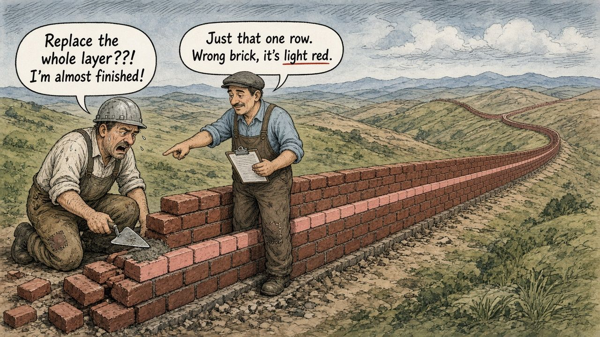

What Happens If It Runs Twice?
The wall with one wrong row
Picture two bricklayers finishing a wall that winds off to the horizon, like a small Great Wall. One of them stops, squints, and points: “That row’s the wrong brick. It’s light red.”
The other one, trowel in hand and nearly done, says what we’ve all said at some point: “Replace the whole layer??! I’m almost finished!”

With real bricks, fixing one row means tearing down everything above it. With data, it shouldn’t. A well-built pipeline lets you pull out just the broken layer, such as Tuesday’s load, and slide in a fixed one. Run that fix once or five times and you still end up with exactly one correct Tuesday. Engineers call that idempotency: repeating the job doesn’t stack extra copies on top.
There’s a question I’ve started asking about every pipeline I touch, and it’s a bit of a buzzkill: what happens if this runs twice?
Not “if it fails”, because we’re usually good at planning for that. I mean what happens if it succeeds twice. A scheduler retries after a timeout. Someone reruns it manually because a dashboard looked off. A backfill overlaps with the regular nightly load. None of these are exotic. They’re a normal Tuesday.
If the honest answer is “we’d get double the rows”, then the pipeline works only as long as nobody ever touches it. That’s not a pipeline, it’s a held breath.
The accounting version of this
In finance, everyone knows the nightmare of the duplicate invoice: the same bill entered twice, paid twice, and nobody notices until the reconciliation doesn’t tie. Good processes stop it at the door with invoice numbers, supplier and amount checks, and controls that say “we’ve seen this one already”. Data engineering has a fancy word for that same instinct: idempotency. Running it once or five times should give you the same result.
The AI version
RAG systems have the same trap. Re-ingest your documents into a vector store without a stable ID per chunk and you end up with three copies of everything. Retrieval then fills the top results with the same paragraph, crowding out the stuff that would have actually answered the question.
What I try to do now
- Write to a key, not just a table. Merge or upsert on a natural key (game ID plus player ID, invoice number, document ID plus chunk number) so a repeat updates rather than adds.
- Rebuild partitions, don’t stack them. For daily loads, delete that day’s slice and reload it. Rerunning Tuesday replaces Tuesday.
- Make duplicates fail loudly. A uniqueness test on the key turns a silent double-count into an obvious red flag.
- Rerun it on purpose. Before trusting a job, run it twice in a test environment and check that the row counts and totals don’t budge. It’s boring, and that’s the point.
- Think about side effects. Emails, API calls and payments can’t be “upserted”. Track what’s already been sent.
The goal is simple: a rerun should be a non-event. If pressing the button again makes you nervous, the pipeline is telling you something.